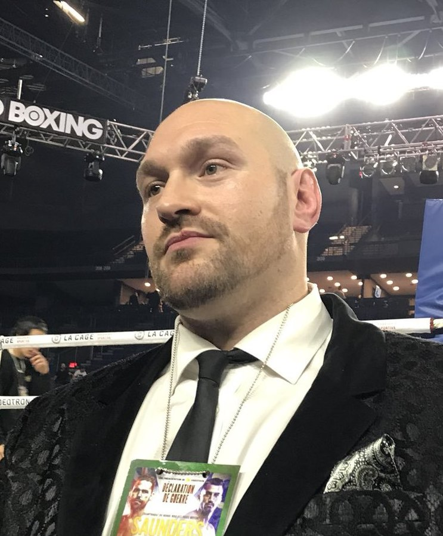

Les règles de la boxe anglaise sont les suivantes : Les combattants doivent porter des gants rembourrés. Les combats se déroulent en plusieurs rounds de 3 minutes. Chaque round est coupé de 1 minute de repos. Les combats se font sur un ring d'environ 7 mètres. La lutte est interdite.
Ci-dessous, Tyson Fury, après 14 victoires consécutives dont 10 par KO
Parmi les boxeurs de boxe anglaise les plus connus, nous retrouvons : Mohamed Ali “The Greatest”. Il s'agit d'un des boxeurs les plus connus de tous les temps.
Aujourd'hui, lorsque l'on évoque la boxe, la première personne nous venant à l'esprit est sans aucun doute Mohamed Ali.